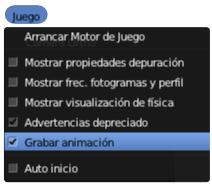

De simulación a animación
¿Por qué hacer una animación?
Los motivos pueden ser muy variados:
- Como no hay nada interactivo, salvo la puesta en marcha de la propia simulación, la animación se integra en web o presentaciones de una manera muy sencilla.
- En la animación se añaden materiales más sofisticados, mejores efectos de iluminación, velocidades distintas en la reproducción...
- Podemos desplazarnos a cualquiera de los fotogramas para hacer un render estático ("F12") de una de las posiciones de la simulación.
No queremos trabajar con fotogramas clave, así que es importante poner un valor de 24 en el campo CPS de la botonera Físicas del panel Mundo  . Como hemos bajado de 60 a 24 es posible que haya que aumentar el valor de Sub-pasos en esa misma botonera.
. Como hemos bajado de 60 a 24 es posible que haya que aumentar el valor de Sub-pasos en esa misma botonera.
Ahora generamos la animación (no el vídeo):
- Activamos la opción Juego/Grabar animación en la parte alta de la interfaz.

- Reproducimos la simulación ("P")... y cuando esté completa la paramos ("Esc"), como es lógico.
- Desactivamos la opción Juego/Grabar animación. Si no hacemos esto, cada vez que volvamos a reproducir la simulación ("P"), se sobreescribirá.
Ya es posible reproducir la animación ("Alt_A") en el editor Vista 3D.
Configuración del vídeo
- Pasamos a la modalidad de trabajo Blender Estándar.
- En el panel Render
 ajustamos a nuestro gusto Resolución, Cuadro inicial (generalmente 1), Cuadro final y atendemos a que Velocidad de refresco se corresponda con la que hemos definido en CPS anteriormente.
ajustamos a nuestro gusto Resolución, Cuadro inicial (generalmente 1), Cuadro final y atendemos a que Velocidad de refresco se corresponda con la que hemos definido en CPS anteriormente.
- En el mismo panel Render vamos a la botonera Salida y escogemos un lugar de destino usando el icono y el formato MPEG.
- Mas abajo, en la botonera Codificación nos aseguramos de optar por el codec MPEG4.
- Pulsamos el botón Animación y esperamos a que se genere la animación.